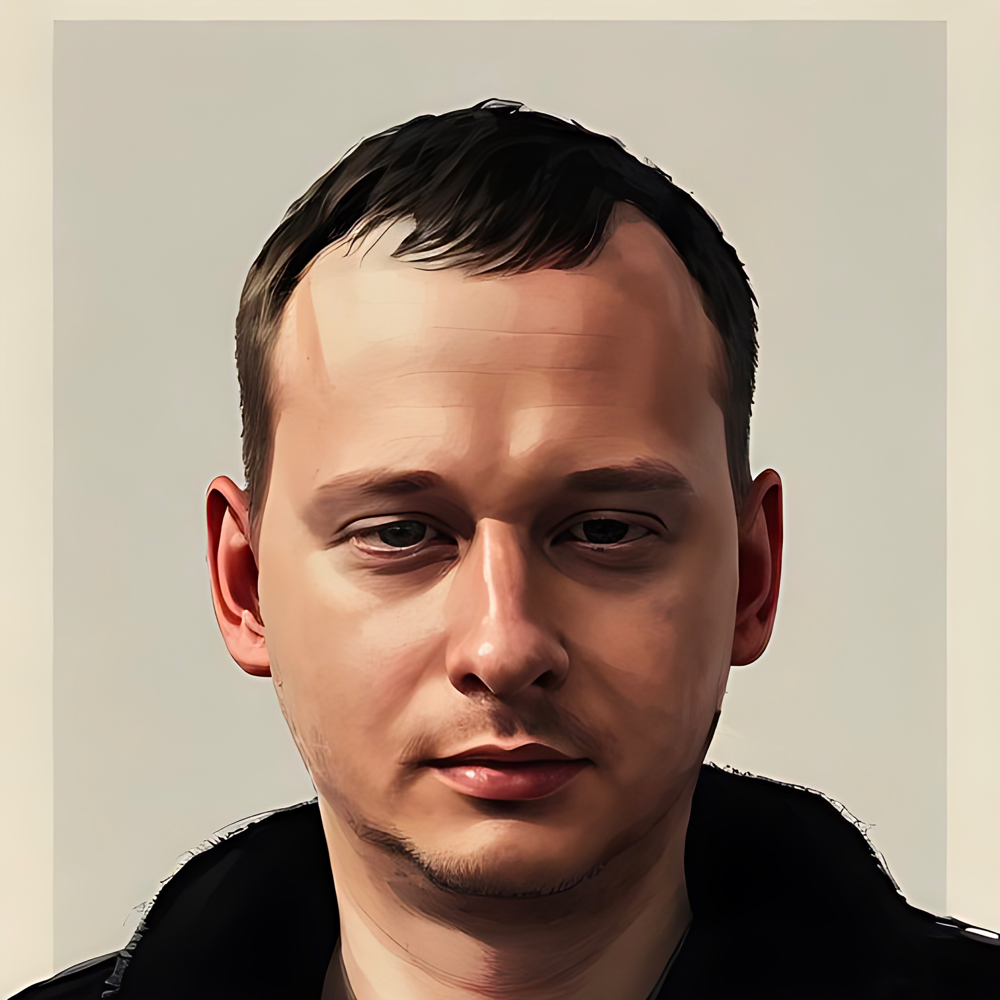

Тут немного про меня

Не стал менять фотку)) Но добавил немного моих привычек (списком):
Лечусь от зависимости к шаурме.
Выздоравливаю после зависимости от мороженого.
Перехожу в режим выживания, если щекотно.
Сначала я пью кофе. Затем я делаю все остальное.
Я утопил вину в вине.
Я на самом деле не смешной. Я просто говорю, а люди думают, что я шучу.